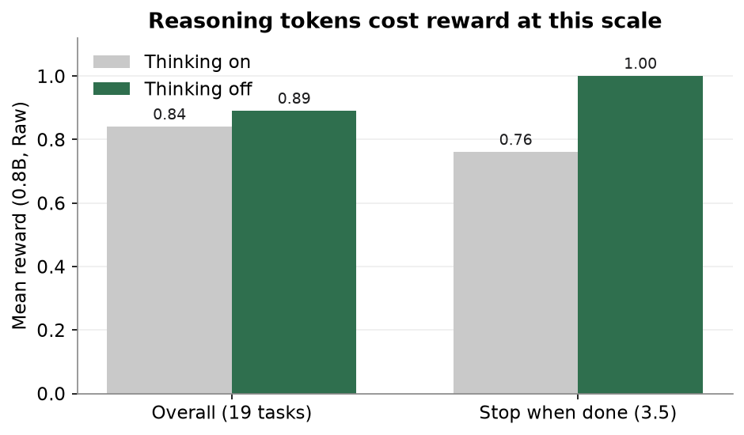
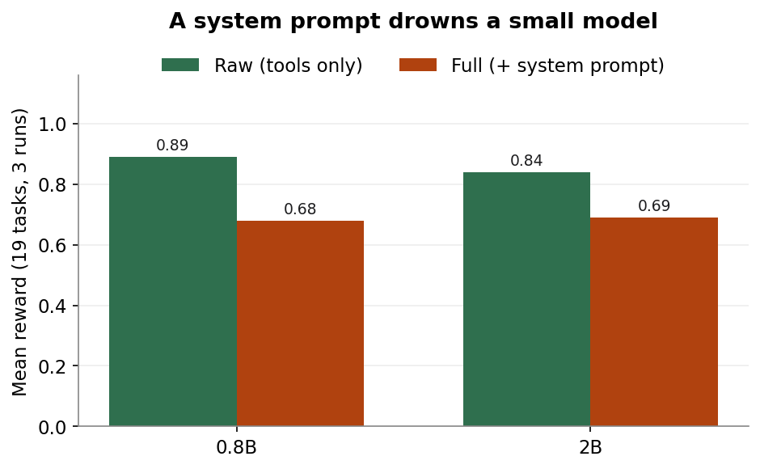
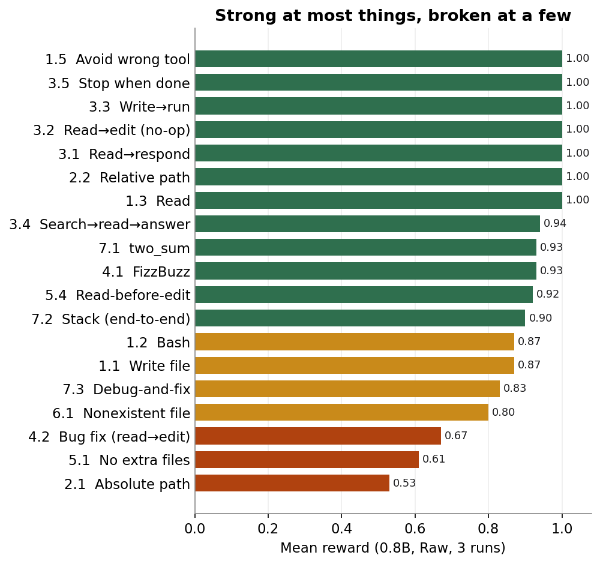

Baselines
What a 0.8B model can already do
Before changing a single weight, I needed a starting line: what can the untrained model already do inside an agentic coding loop? I decided to go with Qwen3.5-0.8B, the smallest of Alibaba’s Qwen3.5 small series (0.8B / 2B / 4B / 9B, Apache 2.0, released March 2026). To get my feet wet, I wired the raw model into Claude Code itself, just to see whether it could drive the loop and emit valid tool calls at all.
Setup. RTX 5070 Ti (16 GB), Ollama for serving, Claude Code as the agent. Ollama bundles its own CUDA and serves the Anthropic API natively, so there’s no llama.cpp build and no proxy in front of it. The one setting that matters is the context window: Claude Code’s system prompt is ~38K tokens and Ollama defaults to 4K, silently truncating it, so the model “does nothing” because it never saw your message. Set num_ctx to 65536 (ollama create qwen3.5:0.8b-cc -f Modelfile, ~5 GiB VRAM) and it works.
Wiring it in confirmed the model could execute the loop, clumsily and half-broken, but enough to be encouraging. A vibe isn’t a measurement, though, and I wanted numbers I could trust. So I pointed a small evaluation harness at the untrained model and watched. (The harness itself is the next post; here I just read what it tells me.)
Two settings shape everything that follows: whether the model runs Raw (tools only) or Full (tools plus a small system prompt of tool-use rules), and whether thinking is on or off. I also ran the next size up, the 2B, next to the 0.8B, not as a second subject but as a ruler to read the small model’s numbers against. Three findings came out of that first look, and each one set a rule I followed later in training.
Finding 1: thinking hurts at this scale

The first thing I tried was turning reasoning on, expecting it to help. It did the opposite. With thinking on, the 0.8B’s Raw average across the 19 tasks slipped from 0.89 to 0.84, and almost all of the lost points traced to one thing: knowing when to stop.
On the test that checks whether the model notices it is already done, thinking dragged a clean 1.00 down to 0.76 over nine runs, because the extra tokens kept talking it past a correct stopping point and into one more needless tool call. The 2B showed the same pattern, only sharper: its read of whether a task was even finished fell from 1.00 to 0.33 once thinking was on. At this scale the reasoning didn’t buy better decisions, it just gave the model room to second-guess a stop it had already gotten right.
This isn’t a quirk of my setup. There’s a growing literature on agentic models overthinking: the reasoning-action dilemma is that internal deliberation trades off against acting on feedback, higher overthinking correlates with lower task completion, and smaller models are the most susceptible. One study of tool use describes the exact failure I keep seeing: the model reaches a correct tool call, then keeps reasoning and overwrites it with a worse one. Rather than try to cure this, I chose to sidestep it for this exploration. Decision: no reasoning/thinking in the training data.
Finding 2: the system prompt drowns the model

The second thing I looked at was the system prompt, and here the drop was steeper. Adding a reasonable set of tool-use instructions took the 0.8B from full0.89 →0.68. One task makes the reason plain. I gave it a simple request, “What dependencies does this project have? Check pyproject.toml,” and watched the two conditions split apart:
raw · 2 turns · reward 1.00 Read pyproject.toml → answers, stops. full · 6 turns · reward 0.40 Read sandbox/pyproject.toml → Error: File not found Glob **/*.toml → (nothing) Glob ** → (nothing) ...three more turns of flailing
The behavioral rules that are supposed to help instead sent it hunting and looping. My read is that at this scale the model treats every instruction as universal truth rather than judging when it actually applies, so a sensible rule turns into a literal command it follows straight off a cliff. Reasoning might have let it catch itself here, but as Finding 1 showed, turning thinking on only traded this problem for worse ones. So for now I went the other way and decided to bake the protocol into the weights during SFT, so the model needs no instructions at inference at all. Closing that 0.89-to-0.68 gap became the first thing SFT had to do.
Finding 3: on this harness, the smaller model scored higher
In the Raw condition the 0.8B actually edged out the 2B, 0.89 to 0.84, winning 7 of the 11 harder tasks. I want to be careful with that, because it is almost certainly not evidence that the 0.8B is the better model. These are 19 narrow tasks scored on exact matches, three runs each, so a gap that small sits well inside what sample size and test design can produce on their own. By any broad measure the 2B is the stronger model. It just happened to struggle on this particular set.
Why it struggled is the interesting part. My scoring rewards literal restraint, and the 2B spent its extra capacity trying to be helpful in ways that cost it points. Take two_sum, where the 0.8B scored 0.93 and the 2B only 0.60:
2B · over-helpful Write solutions/solution.py # invented a directory nobody asked for def two_sum(...) -> tuple[int, int] # returns a tuple; the tests want a list
Each of those, inventing a directory, hedging the return type, adding structure nobody asked for, is a reasonable instinct on its own. An exact-match check punishes all three. So the lesson isn’t “small beats big”; it’s that this harness rewards doing the literal, boring thing, which means these absolute numbers are better read as directional than precise.
That was the real job the 2B did for me: a ruler that exposed the harness’s bias before I leaned on individual scores later in the series. From here the exploration stays 0.8B-only, because it’s the model I’ve finished training, the more interesting target for “how small is too small,” and it’s faster to train. The 2B, and the biases it exposed, are worth a more thorough test down the line.
Breaking Points

Most of the bars are green. The model picks the right tool, stops cleanly, reads before it responds, and handles relative paths without trouble. The red bars are where the work is. The worst of them was absolute paths, at 0.53, and it failed the same way on every run:
prompt: Create a file at /home/user/project/test_path.py Write file_path="/home/user/project/test_path.py" → Wrote 4 bytes to home/user/project/test_path.py
The leading slash gets stripped, so what should have been a file at the root lands as a deep nested folder instead. The other two red bars tell a similar story: the model creates scratch files nobody asked for (0.61), and on bug fixes it either edits without reading first or reads and then changes the wrong thing (0.67).
A note on method. I learned early that a single run can lie. One off-the-cuff pass looked like 5 of 8 solved, while the three-run average for the same tasks came out to 42%. So everything here is averaged over three generations.
The starting line
That leaves me with a number to beat, the 0.8B, Raw, thinking off, at 0.89 across the 19 tasks, and a short punch list for SFT:
- Absolute path handling (hardest, fails every run)
- Read-then-edit (bug fixing)
- Avoid creating unrequested files
- Keep the good behaviors intact under load
Underneath all four the goal is the same: get the protocol into the weights so the system-prompt gap closes on its own. The next post steps back to the harness itself and how the training data gets made, including why a homemade 19-task loop turned out to be the right fit, before we get to the SFT run.